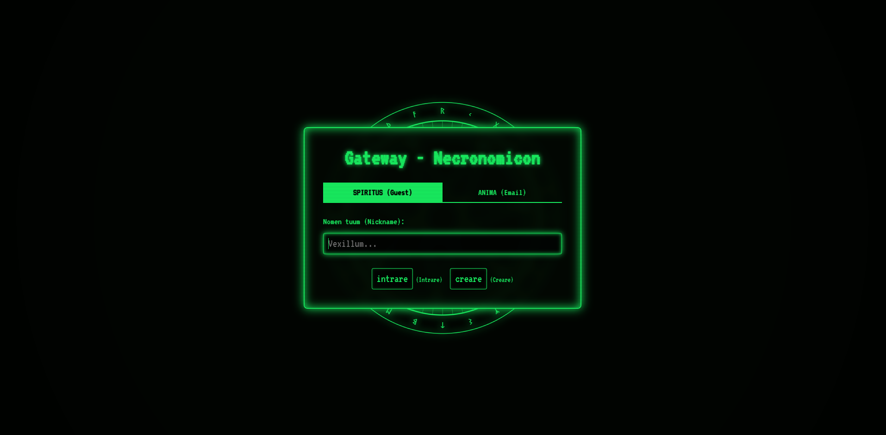
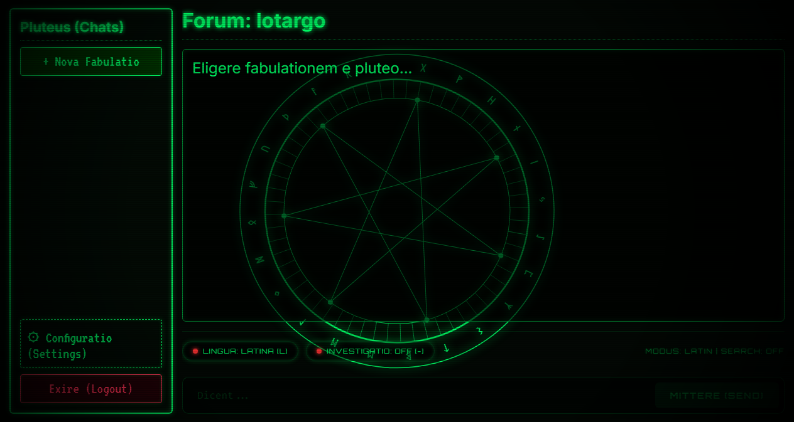
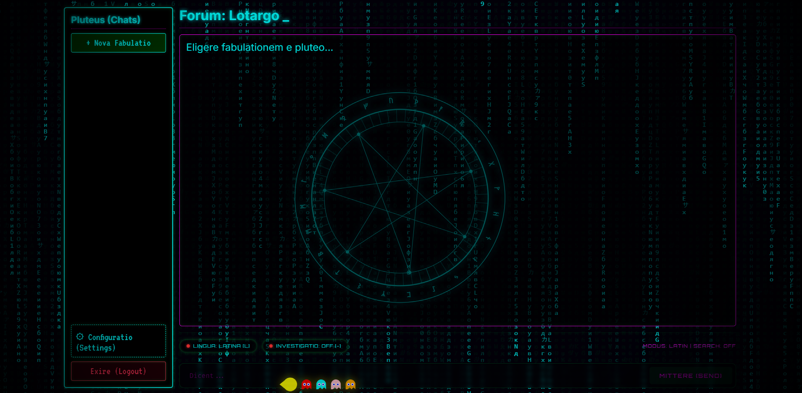
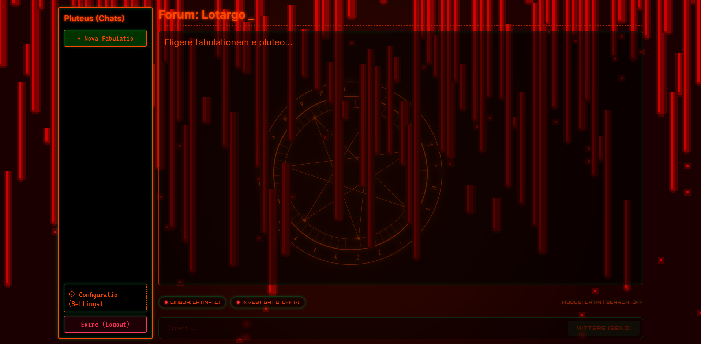
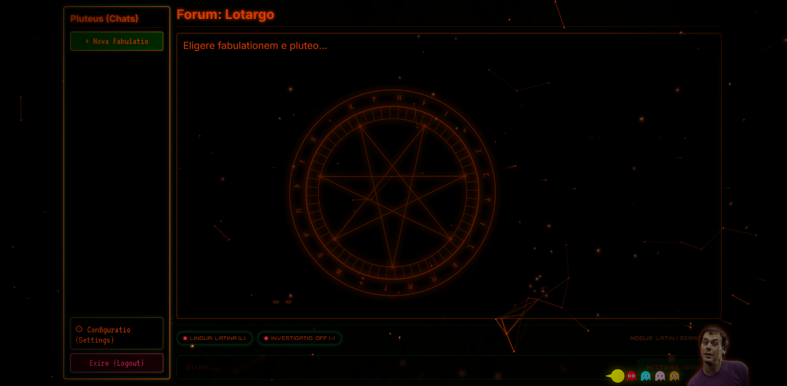
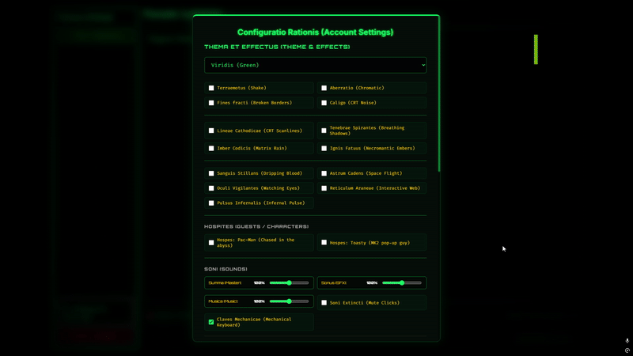
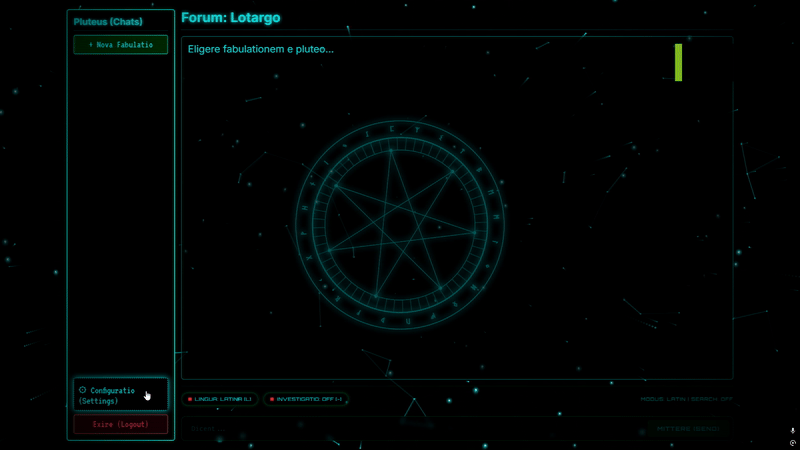

Powerful
Built for complex automation scenarios with a robust and extensible architecture powered by a native FreePascal core daemon.
A powerful automation framework for controlling your systems with dark elegance. Wrapped in the aesthetics of a retro CRT terminal and the lore of dark magic.
Everything you need to automate with power and precision.
Built for complex automation scenarios with a robust and extensible architecture powered by a native FreePascal core daemon.
Highly configurable to adapt to your unique workflows and environments, allowing Spiritus guest access or complete Anima secure registration.
Easily extend functionality with custom LLM provider Balancers (Aequilibrium) and runtime compilation Sandboxes (Mechanica).
Tested, stable, and built with reliability in mind for production use, utilizing transactional PostgreSQL storage and Argon2id security.
Necromancer is an arcane chat interface and local computational backend wrapped in the lore of digital necromancy. Operating on native TCP socket streams, it establishes a gateway to an AI Oraculum (Oracle) using ancient Roman personas, Latin incantations, and occult overlays.
While preserving its retro cathode-ray tube console atmosphere and mechanical audio soundscape, the project has evolved. The backend database has migrated from volatile text scrolls to PostgreSQL, fortified with industry-standard Argon2id cryptographic password hashing. This transition ensures total transactional integrity and strict safety without losing a single drop of its gothic visual and auditory aesthetics.
"Hoc est repositorium in quo vivit chat antiquus et arcanus, nunc potentia SQL confirmatus..."
— Ex Libris Daemonium, Ovid
The five sacred pillars that hold the portal together.
PHP 8.3 / Vanilla JS (Port 8080/TCP)
LuaJIT (Port 8081/TCP)
FreePascal (Port 8080/TCP)
FreePascal Compiler (Port 8082/TCP)
PostgreSQL 15-alpine (Port 5432/TCP)
The heart of Necromancer. Written in FreePascal, it handles socket streams, manages concurrency, and enforces key quarantine protocols.
Renders the CRT canvas console, orchestrates Server-Sent Events (SSE) for real-time streaming, and houses the Web Audio mixer.
Written in Lua, it dynamically rotates LLM endpoints (Gemini, Groq, Cerebras), ensuring zero billing blocks or rate limit crashes.
A PostgreSQL repository storing secure Argon2id hashes, conversational history cascades, and keys metadata in transactional tables.
A secure execution sandbox which compiles raw Pascal commands on the fly, feeding calculations and canvas graphics back to the client.
Arcane functions and algorithmic tools triggered by the Oracle.
search_webQueries external indexes using a sandboxed DuckDuckGo scraper, allowing the Oracle to retrieve temporal and historical references.
search_knowledge_basePerforms a local keyword-indexed RAG (Retrieval-Augmented Generation) search on localized occult materials and compiler structures.
solve_discrete_mathGenerates native FreePascal mathematical code and compiles it inside the Mechanica sandbox to perform precise computations.
run_streaming_simulationCreates physics-based graphical simulations in the compiler sandbox, sending stream arrays of coordinates directly to the client canvas.
To cross the threshold and communicate with the Oracle, you may choose one of two distinct entry patterns:
Anonymous entry. Provide a custom nickname to enter the terminal gateway and participate in public rooms. Ideal for rapid experiments.
Advanced enrollment. Registers your email and details. Password credentials are hashed securely using Argon2id, unlocking progression ranks and histories.

Visual chronicles of our retro terminal UI and custom shader filters.

Neon Green Phosphor Interface

Blood Drips & Glowing Embers

Imber Codicis Canvas Shader

Cursor Reactive Physics Particles

Real-Time Streaming Stream Flow

Live Compilation Coordinates Streaming
Inscribe the commands to summon the services into existence.